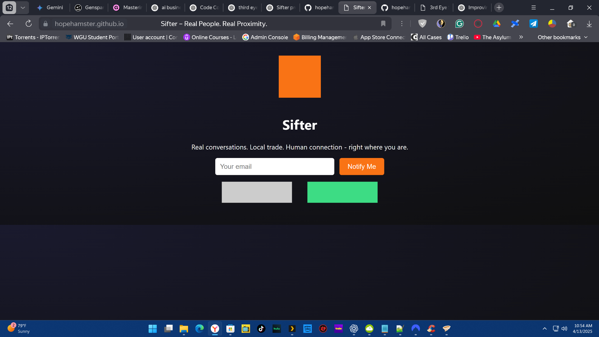

Connect Nearby. Stay Secure. Live in the Moment.
Sifter spins up instant, radius-based chat rooms so you can talk to the people right around you—no sign-ups, no strings attached.


Sifter spins up instant, radius-based chat rooms so you can talk to the people right around you—no sign-ups, no strings attached.
In today's digital age, we're more connected than ever globally, yet increasingly disconnected from the people physically around us. Traditional social media platforms create echo chambers and virtual relationships, while local communities struggle to form meaningful connections.
Sifter introduces the concept of Geofenced Social Networking - a paradigm shift that uses precise location technology to create temporary, location-specific chat rooms. When you're at a coffee shop, concert, or local event, Sifter automatically connects you with others in the same space, enabling real-time, meaningful local interactions.
Using advanced GPS and geofencing algorithms, Sifter creates virtual chat bubbles with customizable radii (50-500 meters). These chat rooms exist only when people are physically present, ensuring authentic, location-relevant conversations. The technology automatically manages room creation, user joining/leaving, and content moderation based on real-world presence.
Beta Testers
Cities Active
Messages Sent
% Encrypted
Advanced geofencing technology combined with intuitive social features creates a seamless local connection experience.
Advanced GPS technology creates chat rooms with pinpoint accuracy. Choose your radius from 50-500 meters, ensuring you connect with people in your exact vicinity. The system automatically adjusts based on your location and movement.
Jump into chats without handing over emails or phone numbers. Guest Mode keeps you in control while 256-bit encryption shields every message.
Transform local trading with zero-fee, instant transactions. Buy, sell, or trade with neighbors without shipping delays or middleman fees. Meet up instantly for face-to-face exchanges in your local area.
AI-powered content filtering combined with community moderation tools. Chat creators can manage their rooms with advanced tools including message removal, user banning, and content flagging. NSFW content is automatically filtered for appropriate audiences.
Seamless experience across iOS and Android devices. Real-time synchronization ensures you never miss a local connection opportunity. Offline mode with automatic sync when connection is restored.
Track your local social impact with detailed analytics. See how many connections you've made, local events you've discovered, and community engagement metrics. Build your local social reputation over time.
At concerts, festivals, or conferences, instantly connect with fellow attendees. Share experiences, coordinate meetups, or find people with similar interests. Transform large events into intimate, connected communities.
Eliminate shipping costs and delays in local trading. Find buyers and sellers in your immediate area for everything from furniture to electronics. Build trust through face-to-face interactions and local reputation systems.
Discover people nearby for coffee, activities, or casual conversations. Break down social barriers and create meaningful connections with people you might never meet otherwise. Perfect for travelers and new residents.
Students can form study groups, share resources, and collaborate on projects with peers in their immediate area. Professors can create location-specific discussion groups for field trips or campus events.
Strengthen neighborhood bonds through local discussions, event coordination, and community support. Create hyper-local networks that foster real-world relationships and community resilience.
Connect with professionals in your industry at conferences, coworking spaces, or business districts. Share insights, find collaborators, or discover job opportunities with people in your immediate professional community.
Unlike global social media, Sifter fosters genuine local relationships. Every conversation happens with people you can actually meet, creating meaningful, lasting connections in your community.
Your conversations disappear when you leave the area, and personal information is optional. No permanent digital footprint, no data mining, no targeted advertising based on your local activities.
Start conversations digitally before meeting in person. Break the ice through chat, then transition to face-to-face interactions when comfortable. Perfect for introverts and social anxiety sufferers.
Facilitate local commerce and support small businesses. Connect local buyers with local sellers, reducing environmental impact and strengthening local economies.
During local emergencies or events, Sifter provides instant communication with people in your immediate area. Coordinate safety, share information, and provide mutual support during critical situations.
Connect with people from different backgrounds in your local area. Share cultural experiences, learn about different perspectives, and build more diverse, inclusive communities.
Be among the first to experience location-based connections. Limited spots available for iOS beta testers.
Requires iOS 14+ and TestFlight app